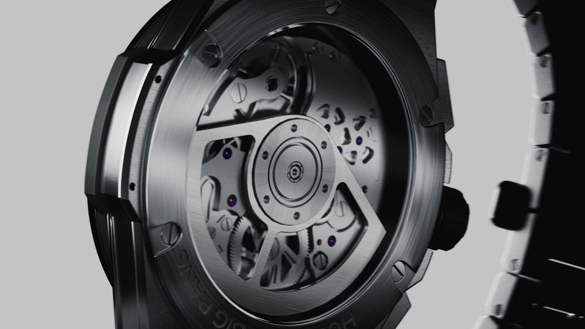

Hublot
Personal Work
Hublot의 시계를 제 스타일대로 새롭게 디자인해 보았습니다.
I've redesigned the watch of hubot in my own style.
시계 내부를 유니크하게 표현하기 위해서 엑스레이를 사용했습니다.
I used x-ray to express the inside of the watch in a unique way
이번 개인작품을 통해서 제품 디테일, 세부적인 라이팅표현에 대해 공부했습니다.
Through this personal work, I studied product details, and detailed lighting expressions.
부드럽다가 역동적인 카메라 모션이 영상에 몰입하게 되도록 제작했습니다.
Soft and dynamic camera motion is made to immerse yourself in the video.
메인 스타일프레임입니다.
.